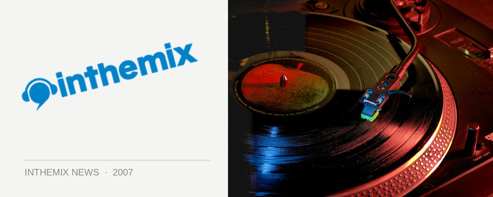

Freestylers are back!
One of the seminal names in breaks, the Freestylers will be returning to Australia in June. They’ll be hitting our shores for a DJ tour and while the Perth gig show is the only one confirmed so far, you can be certain we’ll be getting at least a few more dates across the country.
They’ve been around since the beginning of that ‘shake yo’ ass’ style of music we know as ‘breaks’, releasing a truckload of successful 12” releases and several albums, as well as touring Australia incessantly. They were last here over the New Year period with a full live band in support of their excellent Adventures in Freestyle, but it looks like this time they’ll be behind the decks.
Catch the Freestylers on the 16th June at Gilkinsons Dance Studio in Perth, and stay tuned to ITM for more tour details!